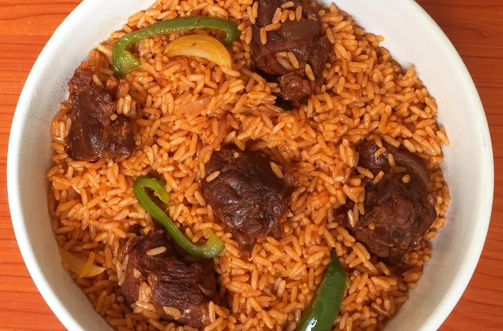

Jollof Rice

Description
Jollof Rice is West Africa's sweetheart. It is rice that is cooked in tomato sauce with spices and seasonings. Absolutely delicious! Eaten in Cameroon, Nigeria, Ghana, Senegal, Gambia, Sierra Leone and many other countries, Jollof is popular across the African continent. So popular that a day (August 22 every year) has been reserved for #WorldJollofRiceDay.
Ingredients
- 3 cups parboiled rice also known as "Uncle Ben's"
- 5 large tomatoes - blended into a puree
- 1 cup tomato sauce (8 oz or 227 g) I used a can this size
- 1 medium sized onion - chopped
- 6 large cloves garlic
- 1 inch ginger root - peeled and chopped
- ½ stalk celery - chopped
- 1 sprig parsley or cilantro - chopped
- 1 green onions - chopped
- 1 sprig basil - chopped
- ½ teaspoon white pepper (optional)
- 1 cup cooking oil I used corn oil
- 3 seasoning cubes-Maggi/Knorr (about 4g each) or three teaspoons chicken bouillon
- ½ pound beef cut into 1 inch slices
- Salt
- 1 habanero pepper optional
- 2 medium carrots - chopped about 1 cup
- 1 handful green beans - chopped about 1 cup
- ½ large green pepper - chopped about ½ cup
- 1 teaspoon curry powder (optional)
Steps
- Combine the garlic, ginger, basil, celery, parsley, and habanero pepper (if using) in a blender. Add half a cup of water and blend into a puree.
- Place meat in a small pot. Add 1-2 cups of water. Add in a quarter teaspoon of salt, 1 tablespoon of chopped onions and 1 tablespoon of the blended spices. Let it cook for 10 minutes.
Then strain meat from the stock and set stock aside for use later.
Cut the meat into little bits (a quarter inch thick each) Sprinkle a pinch of salt on the chopped beef then add half a teaspoon of the blended spice puree. Mix well and let it rest for later use.
- Place three cups of water into a pot. Add in 1 teaspoon of salt (plus curry powder if using) and bring to a boil. Wash rice and add to boiling water. Let it cook on medium heat until the water is all gone. Let the rice rest for 5 minutes then fluff with a fork.
- In a large pot pour in a quarter of the oil. Let the oil heat up for about 3 minutes on high heat. Add in the seasoned meat from step 2. Let the meat brown for about 2 minutes on each side. Remove meat from the oil and set aside.
- Add in the rest of the oil and let it heat up for 3 minutes. Add the onions. Let them saute for 2 minutes until translucent.
- Then add in pureed tomatoes and let it cook while you stir from time to time until it starts sticking to the bottom of the pot - about 10 minutes.
- Add in tomato sauce and mix well. Let it cook together with the tomato puree while you stir from time to time for about 10 minutes. They are ready when the tomato sauce separates from the oil and no longer tastes sour.
- Add in your blended spice mix and white pepper (if using). Mix well and let it cook for about 3 minutes.
- Add in the beef stock and seasoning cubes (Maggi) and let it simmer for about 5 minutes.
- Add in green onions and stir. Let it cook for a minute.
- Then add the chopped vegetables - carrots, green beans and green pepper. Mix well.
- Add in boiled rice and beef. Mix everything on low heat until well incorporated. Be careful not to break or mash the rice. Turn off the heat. Your amazing Jollof rice is ready!